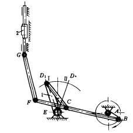
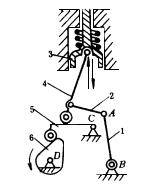
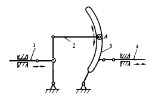
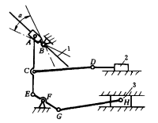

机构示意图
机构特性简介
换向配气机构

铰链五杆机构ABCDE有2个自由度，当摇杆DE根据生产工艺要求固定在D 1 E或D 2 E时，该机构就变成为曲柄摇杆机构ABCD。曲柄AB作主动件转动，通过连杆BF、FG推动滑块2移动。当改变DE的位置后，可使滑块2完成生产工艺上所要求的换向配气工作。
供油泵机构

图示机构为调节式柴油机的供油泵机构，可根据供油的需要量将摇杆1调节至规定位置，使铰链A在相应的位置上固定，从而改变杆4端部的滚子与凸轮从动件5的接触位置，达到控制柱塞3的行程和供油量。主动凸轮6通过杆5、4带动柱塞3供油。
双滑杆调节机构

主动件1通过连杆2、摇杆3带动从动件4作往复移动。弯槽形摇杆3的长度由槽中铰链A的固定位置决定，铰链A的位置可根据需要进行调节，这样就改变了杆3的长度， 同时调节从动件4的行程。
滑块行程调节机构

改变滑块A的导轨1的导向，可以调节机构运动。导轨1在α角范围内绕B转动，当将其调节到某个需要的位置时，阀门2可得到恰当的行程，并满足换气要求，从而可为活塞3提供必要的气体压力使之正常工作。 导轨1调妥后应固定在所需要的位置上，活塞3作主动件，并通过中间各杆与阀门2联动，以保证正常的工作。